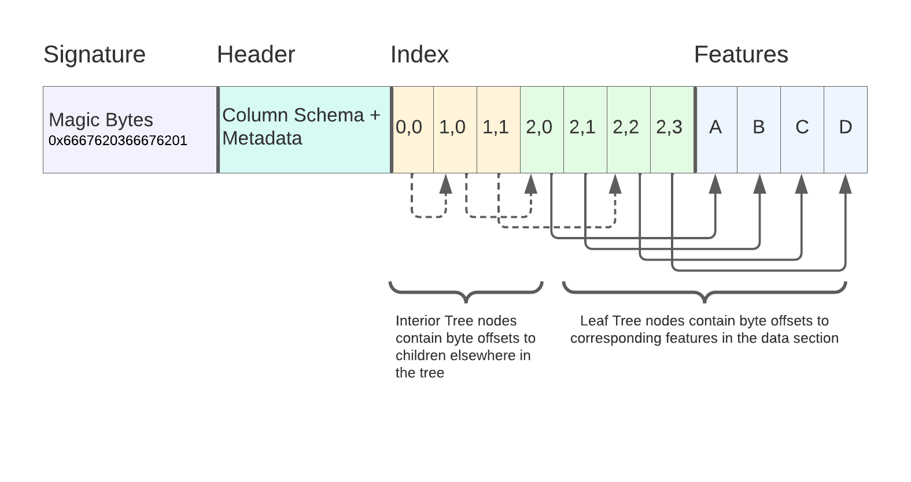

FlatGeobuf
Guidelines for FlatGeobuf
FlatGeobuf
FlatGeobuf is a binary file format for geographic vector data, such as points, lines, and polygons.
Unlike some formats like Cloud-Optimized GeoTIFF, which builds on the previous success of TIFF and GeoTIFF, FlatGeobuf is a new format, designed from the ground up to be faster for geospatial data.
FlatGeobuf is widely supported — via its GDAL implementation — in many programming languages as well as applications like QGIS.
FlatGeobuf supports any vector geometry type defined in the OGC Simple Features specification. This includes the standard building blocks of Point, LineString, Polygon, MultiPoint, MultiLineString, MultiPolygon, and GeometryCollection, but also includes more obscure types such as CircularString, Surface, and TIN (Triangulated irregular network). A best practice is to store only geometries with the same type, as that allows readers to know which geometry type is stored without scanning the entire file.
An optional row-based spatial index optimizes for remote reading.
File layout
The internal layout of the file has four sections: magic bytes (aka signature), header, index, and data (aka features).

Image source: Horace Williams, Kicking the Tires: Flatgeobuf
- The file signature is 8 “magic bytes” indicating the file type and specification version, which allows readers to know a file is FlatGeobuf, even if it’s missing a file extension.
- Next comes the header, which stores the bounding box of the dataset, the geometry type of the features (if known and unique), the attribute schema, the number of features, and coordinate reference system information.
- After the file header is an optional spatial index. If included, this lets a reader skip reading features that are not within a provided spatial query.
- Last come the individual features. The rest of the file is a sequence of feature records, placed end to end in a row-wise fashion.
Row based
Internally, features are laid out in a row-oriented fashion rather than a column-oriented fasion. This means that it’s relatively cheap to select specific records from the file, but relatively expensive to select a specific column. This is ideal for a small spatial query (assuming an index exists in the file) but to load all geometries requires loading all attribute information as well.
No internal compression
FlatGeobuf does not support compression while maintaining the ability to seek within the file. In particular, FlatGeobuf’s spatial index describes the byte ranges in the uncompressed file. Those byte ranges will be incorrect if the file is compressed.
A compression like gzip can be applied to the FlatGeobuf file in full, but keep in mind that storing the compressed file will eliminate random access support.
No append support
FlatGeobuf is a write-only format, and doesn’t support appending, as that would invalidate the spatial index in the file.
Random access supported via spatial index
FlatGeobuf optionally supports a spatial index at the beginning of the file, which can speed up reading portions of a file based on a spatial query. For more information on how this spatial index works, refer to the Hilbert R Tree page.
Note that because FlatGeobuf has no internal chunking, the spatial index references every single object in the file. This means that for datasets with many small geometries, like points, the spatial index will be very large as a proportion of the file size.
Streaming features is supported
FlatGeobuf supports streaming, meaning that you can use part of the file before the entire file has finished downloading. This is different than random access, because you have no ability to skip around in the file.
Streaming can be valuable because it makes an application seem more responsive; you can have something happen without having to wait for the full download to complete. A good example of this is this example by FlatGeobuf’s author Björn Harrtell. As the file is downloaded to the browser, portions of the file get rendered progressively in parts.
This works even with full-file compression like gzip or deflate because those compression algorithms support streaming decompression.
Broad type system
FlatGeobuf supports attributes with a range of types:
Byte: Signed 8-bit integerUByte: Unsigned 8-bit integerBool: BooleanShort: Signed 16-bit integerUShort: Unsigned 16-bit integerInt: Signed 32-bit integerUInt: Unsigned 32-bit integerLong: Signed 64-bit integerULong: Unsigned 64-bit integerFloat: Single precision floating point numberDouble: Double precision floating point numberString: UTF8 stringJson: General JSON type intended to be application specificDateTime: ISO 8601 date timeBinary: General binary type intended to be application specific
Note that FlatGeobuf is unable to store nested types without overhead. It doesn’t support a “list” or “dict” type apart from JSON, which has a parsing overhead.
In some situations, having strong nested type support can be useful. For example STAC stored as GeoParquet has columns that are nested, such as the assets column that needs to store a dictionary-like mapping from asset names to their information. FlatGeobuf is able to store such data by serializing it to JSON, but it’s not possible to see the nested schema before parsing the full dataset.
Known table schema
FlatGeobuf declares the schema of properties at the beginning of the file. This makes it much easier to read the file — compared to a fully schemaless format like GeoJSON — because the reader knows what data type each attribute has in advance.
References
- flatgeobuf.org: Official project website.
- Flatgeobuf: Implementer’s Guide